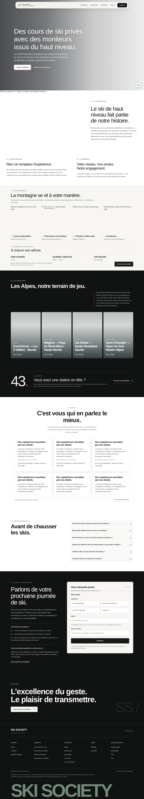
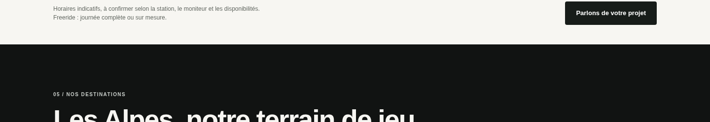
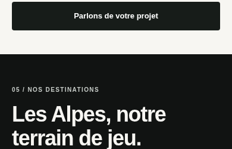
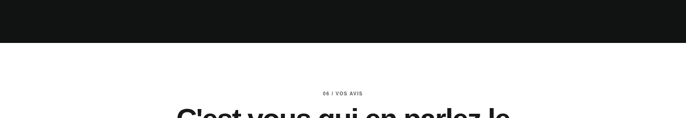
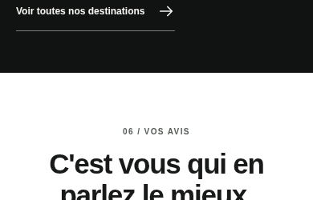
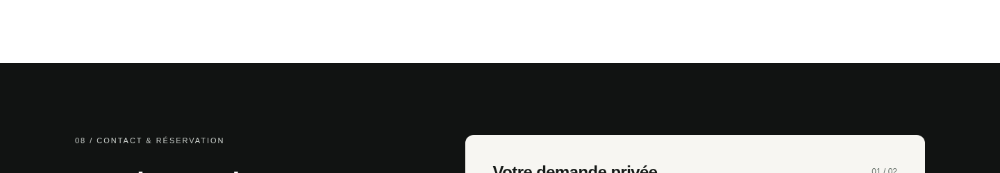
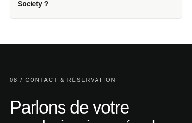

Fonds pleine largeur — preuve visuelle
Pixels contrôlés aux deux bords et au centre. À 1440 px : x=0, 720, 1439. Les couleurs sont mesurées dans les zones unies sans photographie.
Les photos et polices distantes restent bloquées par le réseau. Les captures brutes affichent le rendu réel ; aucune recoloration n’a été appliquée. Une copie annotée distingue les points de mesure.
Pages complètes



Formats → Destinations




Destinations → Avis




FAQ → Réservation




Points de contrôle annotés · Rapport et mesures · Résultats JSON